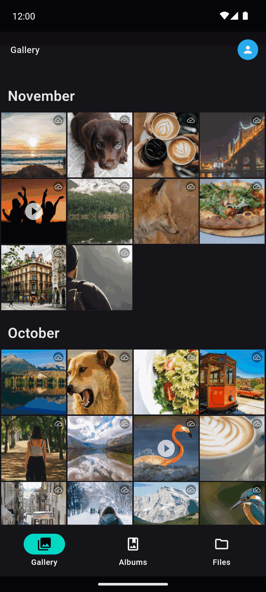
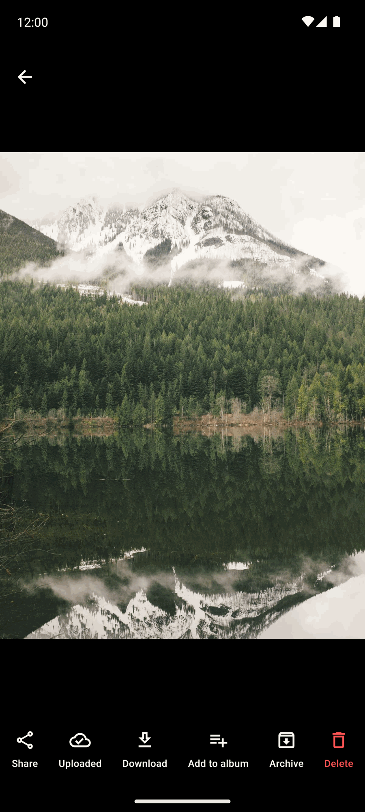
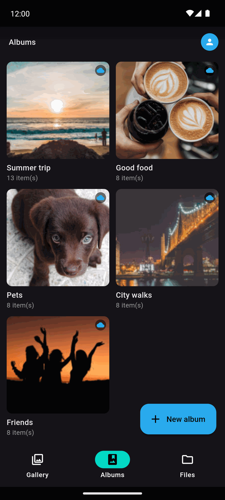
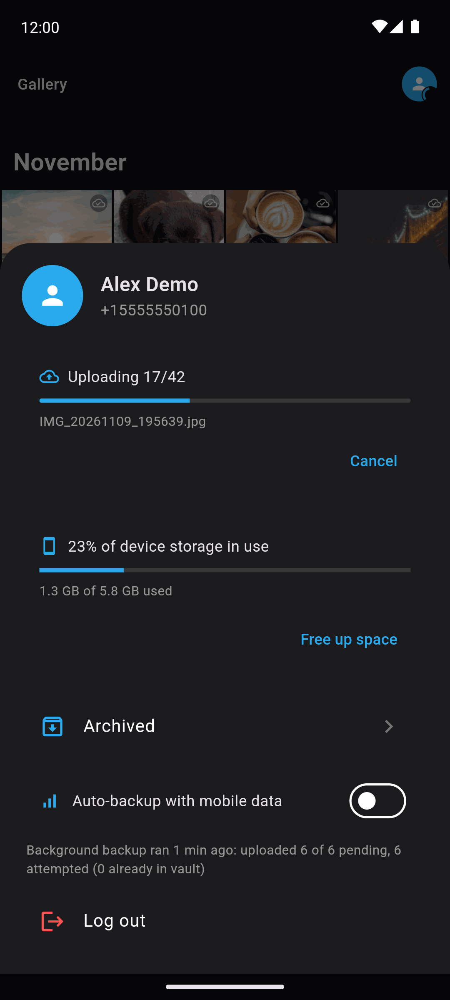

Unified gallery
Device and cloud together, grouped by month, with instant previews and no grey tiles while you scroll.
A fast photo and file manager for Android that backs up to your Telegram Saved Messages. No server, no subscription, nothing shipped with credentials. Your account, your storage.
Android. Updates through Obtainium or by downloading the next release.
One timeline for the phone and the cloud, with backup that runs on its own.
Device and cloud together, grouped by month, with instant previews and no grey tiles while you scroll.
Photos and albums upload automatically, even with the app closed, with a progress notification and a Wi-Fi or mobile data gate.
Uploads are matched against the cloud index, so reinstalling never re-uploads what is already stored.
The index lives in your Telegram, so it comes back after a reinstall and follows you across devices.
AES runs natively through FFI on ARMv8 Crypto Extensions or AES-NI, hundreds of times faster than pure Dart.
Tap-to-seek, fullscreen and hardware decoding, right inside the viewer.
Organize into albums, archive items, and reclaim phone storage for files confirmed in the cloud.
Compact preview packs and an in-app backfill build thumbnails for files already in your cloud.
Each user enters their own api_id and api_hash from my.telegram.org. No credentials ship with the app.
Taken from a demo library of free sample photos, never from a real library.




You need a free Telegram application identity. It takes a minute.